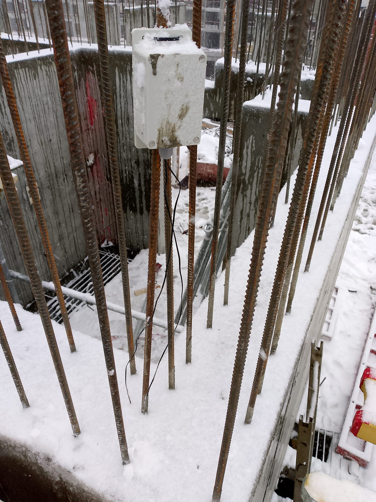
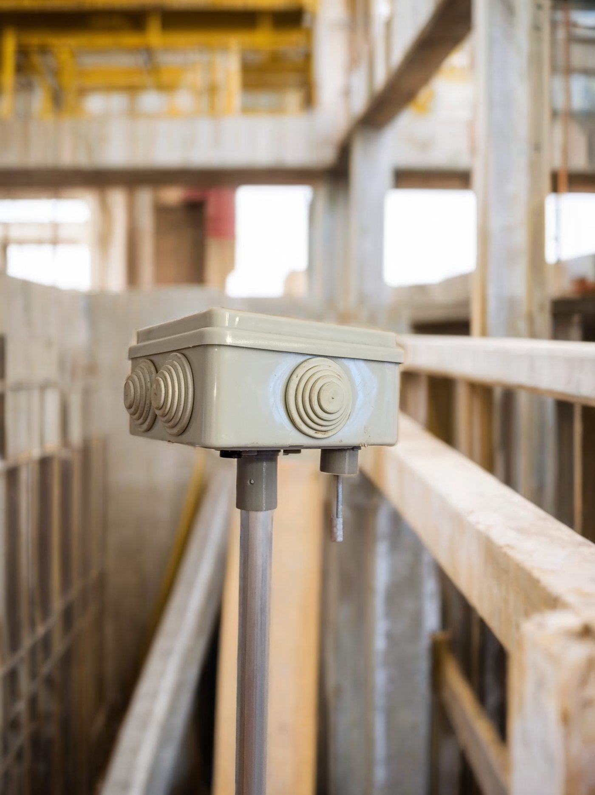
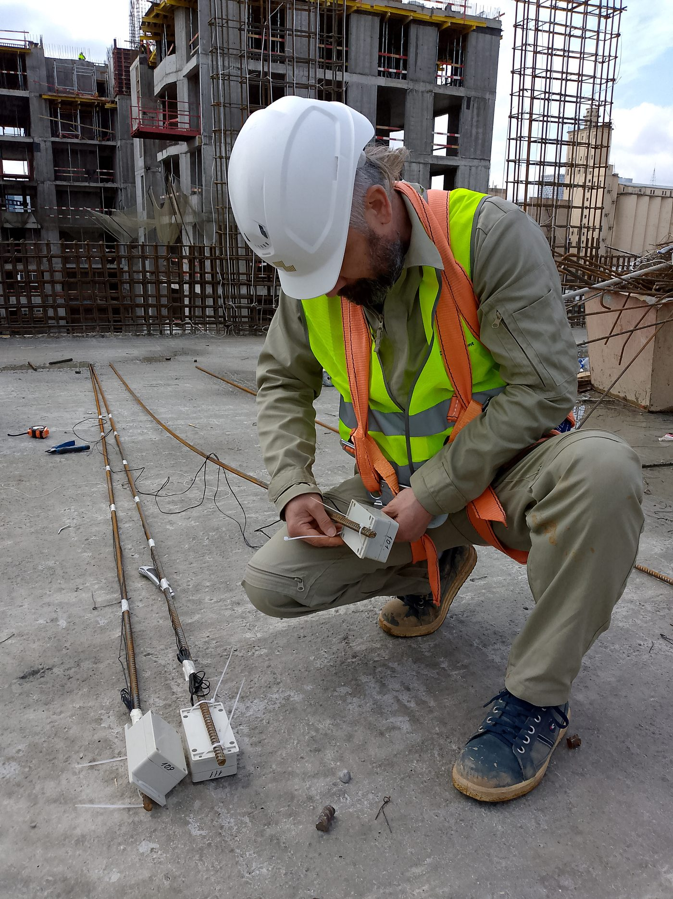
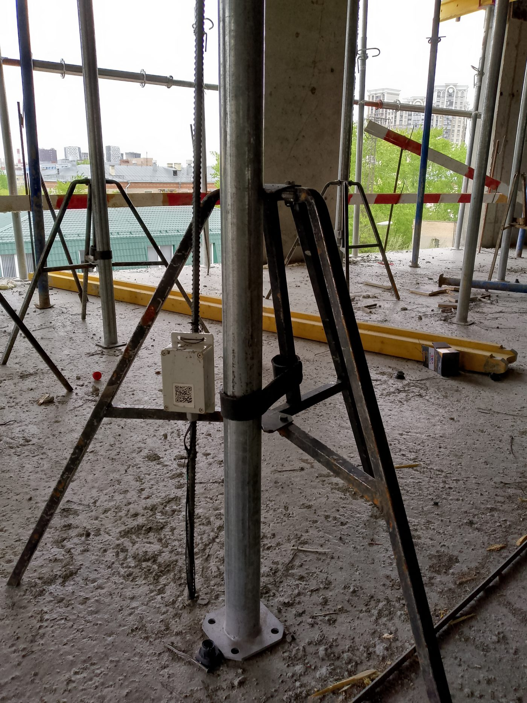

Зимнее бетонирование · электропрогрев
Режим прогрева,
который можно предъявить
Непрерывное измерение температуры в конструкции, сверка фактического режима с технологической картой и готовый протокол за смену — вместо журнала, заполненного со слов в конце недели.
Отрицательные температуры — рабочий режим системы, а не исключение
Что должно происходить с температурой
Что требует свод правил
Норматив уже написан. Вопрос в том, чем доказать его исполнение
СП 435.1325800.2018 задаёт режим прогрева параметрами, а не пожеланиями. Система измеряет каждый из них непрерывно и сохраняет ряд.
Скорость подъёма
Ограничена и зависит от модуля поверхности конструкции.
Форсированный разогрев
Ограничен по продолжительности.
Температура изотермии
Ограничена сверху, отдельно — для наружных слоёв.
Скорость остывания
Ограничена; для массивных конструкций считается против трещин.
Замеры и журнал
Не реже одного раза в два часа, с ведением журнала сдачи и приёмки смены. Система ведёт его сама и отдаёт готовым.
Сколько точек ставить
Не менее одной на 3 м³ бетона, 6 м длины конструкции, 50 м² перекрытия, 40 м² полов. Расстановка репрезентативна и определяется сценарием контроля.
Разница
Как это происходит сейчас
Без системы
- Режим держат вручную, поворотом ручек трансформатора.
- Замеры делает человек, ночью — реже всего, а именно ночью происходит значительная часть отклонений.
- Журнал заполняется задним числом со слов.
- Аварийное отключение питания замечают утром.
- Доказательством соблюдения режима служит подпись, а не данные.
С системой
- Температура в конструкции измеряется непрерывно и сохраняется.
- Фактический режим сверяется с уставками технологической карты.
- Отклонение и обрыв питания видны сразу — оповещение в чат-бот, на почту или SMS.
- Протокол за смену и за заливку формируется автоматически.
- Есть прогноз: достижимы ли требуемые показатели при текущем режиме.
Как устроено
Система «Элемент Контроль»
Пять звеньев: два в конструкции и на площадке, три — в цифровом контуре.
Прогноз прочности
Расчёт по методике зрелости бетона — модели Nurse-Saul и Arrhenius — с учётом состава применяемой смеси.
Работа без остановки
Режим 24/7, масштаб — более тысячи одновременных точек контроля.
Управление прогревом
Алгоритм автоматической корректировки режима через тиристорный регулятор трансформатора опубликован в рецензируемом журнале и апробирован на объектах. Поставляется по отдельному соглашению.
На площадке
Как это выглядит в работе



Порядок величин
На чём считается эффект
Система измеряет, сравнивает с заданным режимом и документирует результат. Величина эффекта на конкретном объекте зависит от условий производства работ и определяется совместно с заказчиком.
Где применялось
Объекты
Аквапарк и завод в Завидово, массивные фундаменты. Практическое внедрение разработанных решений.
Мониторинг твердения на серии заливок, две марки бетона.
Жилой комплекс, поточное бетонирование корпусов, типовой этаж и массивная фундаментная плита.
Перечень внедрений опубликован в статье «Алгоритм управления электропрогревом бетона для решения задачи цифрового контроля качества монолитных работ», журнал «Строительство и архитектура», 2024.